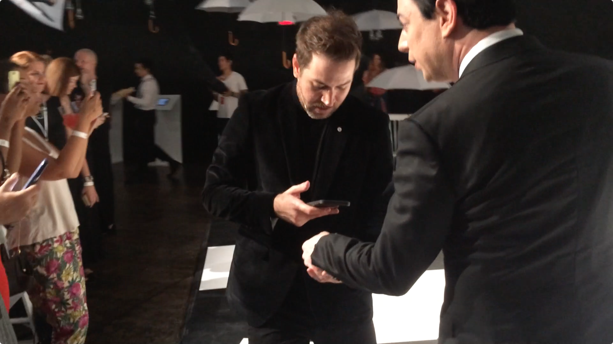
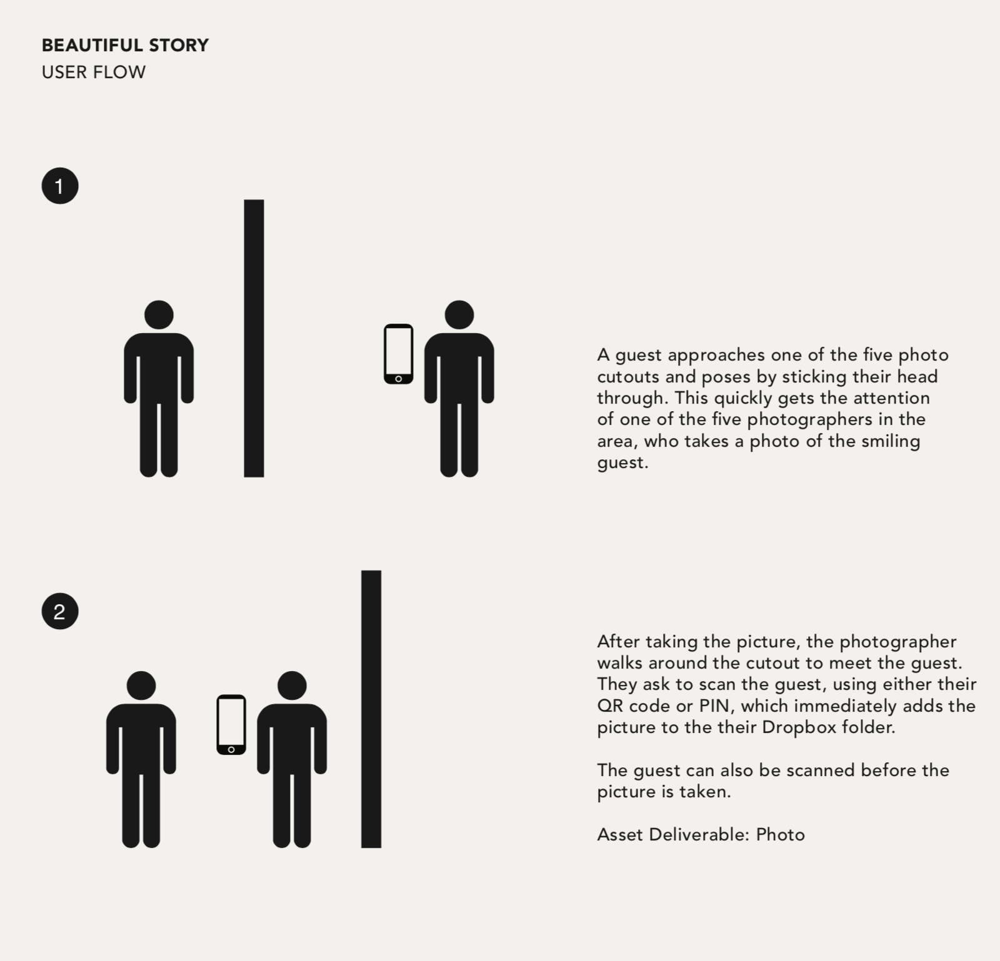
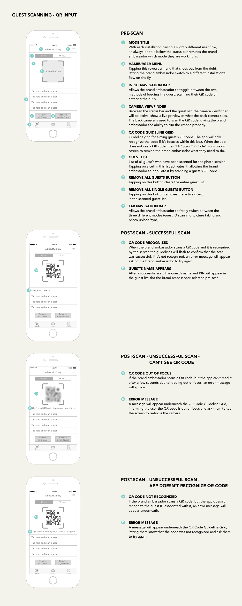

For Target & Vogue’s 2015 New York Fashion Week event, Bossa NYC created a high-tech photo booth that allowed guests to get their picture taken throughout a series of installations and get instant access to the results. As the UX lead, I designed wireframes and user flows for the experience, as well as collaborated with the creative technologist on the overall concept and the technical approach.
Mother New York approached Bossa about creating a series of photo booths that would capture guests as they interacted with three installations scattered throughout the event. They wanted guests to have instant access to their photos and videos, so that they could share them on social media as quickly as possible. Bossa needed to develop a system that allowed guests to quickly register their contact information before they entered the party and then effortlessly associate this information to every picture of them that was taken. Additionally, the system had to be robust enough to handle both photos and video, as well as the ability to remotely trigger cameras.
Design Process
Our goal from the beginning was to give the guests an experience that was similar to taking pictures with their own camera. We wanted them to be able to walk up to any of the installations, have there photo taken and have instant access to them on their phone with a minimum amount of friction as possible.
The first step was to simplify the process for guests to identify themselves to photographers. We wanted to encourage them to take multiple photos, but knew that entering an e-mail address or PIN every time would deter them from taking more than one or two. After researching a number of options, we decided to have guests identify themselves by scanning a bracelet. When they entered the party, they would receive a bracelet with a custom QR code and register their e-mail address with a brand ambassador. Every time they took a photo, the photographer would scan their bracelet and the photo would be immediately added to a personalized online photo album that was accessible on their phone.

Photographer scanning a guest's QR bracelet at the event
With our technology stack all set, I began exploring user flows. Having to consider both the needs of the guests and the photographer, I considered the steps that were necessary for a complete photo session:
A seemingly simple set of steps grew increasingly complex once they were applied to the realities of the event. For each of the three installations, I determined the proper order of events, creating a number of different flows that encompassed the unique demands of each one (options for multiple photos, scenarios where separate people handled bracelet scanning and photography, remote triggering). It became apparent that a rigid user flow wasn’t going to be successful. Without the ability to simulate a 250 person party, it was difficult to anticipate exactly what would work best for both the guests and photographers.

Sample user flow for a user having their picture taken
To optimize the opportunity for success, I created a system that gave photographers the flexibility to determine what order each step should be taken to best suit the specific situation. I designed a tabbed interface that let photographers switch back and forth between scanning and photography as often as they wanted before uploading the photos and ending the session. Our creative technologist implemented the design into an early build and after some user testing we were confident that this was the right solution.

Wireframe of QR code scanning interface
Results
At the jam-packed New York Fashion Week event the app worked flawlessly. Over four hundred guests signed up for the service and nearly two thousand pictures were sent. Reaction was so strong that Bossa is currently working on standardizing the app and offering it for other events.